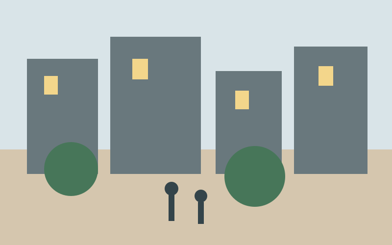
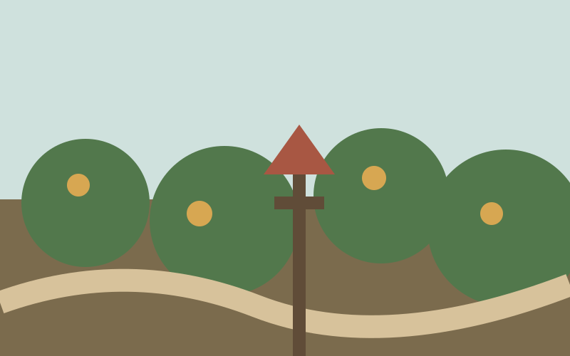
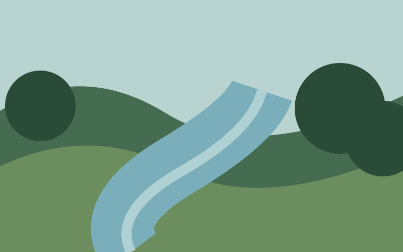

PremiumA forgotten coastal path is becoming a treasured public space again
Local volunteers have restored a peaceful route connecting three villages along the Atlantic shore.
Local volunteers have restored a peaceful route connecting three villages along the Atlantic shore.

A modest civic project shows how seating, trees and slower streets can change the rhythm of a neighbourhood.
Evening access has made the local library part study room, part refuge and part cultural meeting place.

Residents describe how an overlooked strip of land became the most sociable place on their street.
The newly catalogued collection spans oral history, music, drama and decades of everyday voices.

Five years of careful observation reveal a waterway recovering in ways few researchers expected.